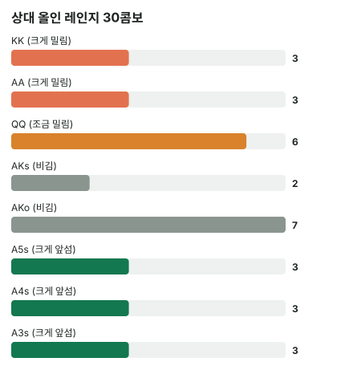

안녕하세요. A17에서 4벳 레인지를 셀 때 내 손의 카드가 상대 콤보를 지운다는 걸 봤죠. 오늘은 그 블로커를 실제 올인 콜 결정에 넣어 볼게요.
3벳했더니 상대가 100BB 올인으로 4벳을 해 왔어요. Hero 손에는 AK. "AK면 당연히 콜"이라는 말도, "올인이면 AA·KK겠지"라는 말도 많이 듣죠. 오늘은 둘 다 접어 두고 콤보와 필요 에퀴티로만 정해 봐요.
이 글에서 배울 것
- 올인 콜의 필요 에퀴티가 왜 반에 가까운데도 반은 아닌지(이미 낸 돈이 하는 일)
- AK가 상대 올인 레인지에서 AA·KK·AK를 얼마나 지우는지, 그게 에퀴티를 어떻게 바꾸는지
- 이런 결정이 레인지 몇 콤보 차이로 뒤집힐 만큼 얇은 이유
오늘의 핸드
Hero (BB 자리 · 스택 100BB) / 상대(BTN) 100BB


프리플랍
상대(BTN) 2.5BB 오픈 → SB 폴드 → Hero(BB) 10BB로 3벳 → 상대 100BB 올인 → Hero는 콜? 폴드?
지금 팟 0.5(SB 블라인드) + 10(Hero) + 100(상대) = 110.5BB. 콜하려면 100 − 10 = 90BB를 더 내요.
결론부터 말할게요. 오늘 가정한 상대라면 콜이 이득입니다. 콜하면 한 번에 평균 약 4.41BB를 벌어요. 다만 차이가 아주 얇아서, 상대 레인지가 조금만 달라져도 뒤집혀요.
왜 그런지 4단계로 볼게요.
1단계. 필요 에퀴티: 반에 가깝지만 반은 아니에요
계산
콜은 90BB를 더 내고, 이기면 지금 팟 110.5BB를 가져오는 결정이에요.
필요 에퀴티 = 90(Hero 콜) ÷ 200.5(콜한 뒤 팟) = 약 44.89%
왜 딱 반이 아닐까
"서로 100BB씩 거는 올인인데 왜 반을 안 이겨도 돼요?" 하실 수 있어요. Hero가 앞서 3벳으로 낸 10BB는 이미 팟의 돈이에요. 지금 Hero가 거는 건 90BB인데, 이기면 받는 돈은 상대 100BB에 SB 블라인드까지 110.5BB예요.
90을 걸고 110.5를 노리는 내기라서, 반보다 조금 덜 이겨도 본전이 되는 거예요. 그래도 44.89%면 거의 반은 이겨야 하는 높은 기준이에요. 올인 콜이 쉽지 않은 이유죠.
2단계. 상대 올인 레인지 (가정)
상대가 QQ+, AK, A5s, A4s, A3s로 올인한다고 가정할게요(솔버 결과 아님). A5s~A3s는 오늘 가정에서 블러프 역할을 하는 핸드예요.
블로커 없이 세면
Hero 카드를 무시하고 세면 이래요.
6(QQ) + 6(KK) + 6(AA) + 4(AKs) + 12(AKo) + 12(A5s~A3s, 4씩) = 46
Hero의 A♥·K♦부터 지우면
| 핸드 | 콤보 | 왜 이 숫자? |
|---|---|---|
| 6 | Q는 다 남아 있음 | |
| KK | 3 | K♦가 Hero 손에 → 남은 K 3장 |
| AA | 3 | A♥가 Hero 손에 → 남은 A 3장 |
| AKs | 2 | A♥·K♦가 빠져 스페이드·클럽만 |
| AKo | 7 | A 3장 × K 3장 = 9, 그중 수딧 2를 뺌 |
| A5s, A4s, A3s | 3씩 | A♥가 빠져 무늬 셋 |
| 합계 | 30 |
💡 빨리 세는 팁: AK를 들면 상대 AA·KK는 6 → 3, AK는 16 → 9
무엇이 얼마나 줄었나
46이 30으로 줄었는데, 줄어든 곳이 어디인지가 중요해요.
- Hero를 크게 이기는 AA·KK: 6 + 6 = 12에서 3 + 3 = 6으로 절반
- Hero와 비기는 AK: 16에서 9로
- Hero가 크게 앞서는 블러프: 12에서 9로, 4분의 1만 줄었어요
- Hero가 조금 밀리는 QQ: 6 그대로
이게 무슨 뜻이냐면, AK는 Hero를 이기는 핸드를 가장 많이 지우고, Hero가 이기는 블러프는 덜 지운다는 거예요. 블로커가 Hero 편으로 일하는 장면이에요.
3단계. 에퀴티: 30콤보 상대 약 47.09%
계산기로 이 30콤보 전체 상대 A♥K♦의 에퀴티를 구하면 약 47.09%(프리플랍 몬테카를로)예요. 줄마다 보면 이래요.
- QQ에는 조금 밀려요(페어 대 두 오버카드, 반반보다 조금 아래)
- KK·AA에는 크게 밀려요(Hero 카드 중 하나가 상대 페어와 같은 숫자라 그 카드는 맞아도 도움이 안 돼요)
- AK에는 대부분 비겨요(같은 무늬로 플러시가 되는 드문 경우만 갈림)
- A5s~A3s에는 크게 앞서요(A가 같고 K 키커가 높음)
레인지 에퀴티는 이 줄들을 콤보 수만큼 가중해서 평균 낸 값이에요. 블로커 덕분에 크게 밀리는 AA·KK의 비중이 46 중 12(약 4분의 1)에서 30 중 6(5분의 1)로 작아졌어요. 크게 밀리는 줄의 무게가 가벼워진 만큼 평균이 반에 가깝게 버틸 수 있었던 거예요.

4단계. 비교와 돈
| 숫자 | |
|---|---|
| 필요 에퀴티 | 약 44.89% |
| Hero 에퀴티 | 약 47.09% |
47.09% > 44.89%라 콜이에요. 돈으로 바꾸면 이래요.
콜 손익 = 0.47085 × 110.5(이기면 버는 돈) − 0.52915 × 90(지면 잃는 콜) = 52.03 − 47.62 = 약 4.41BB
올인이라 뒤에 결정이 없어서, 이 숫자가 최종 결과예요. 같은 상황에서 100번 콜하면 이긴 판에서 약 5202.89BB, 진 판에서 약 4762.35BB가 오가서 합계 약 440.54BB가 남는 셈이에요. 한 번 한 번은 크게 오가는데, 평균으로 남는 건 그중 아주 작은 몫이에요.
왜 그럴까: 올인 콜은 "얇은 결정"이에요
두 숫자가 붙어 있어요
필요 에퀴티 44.89%와 Hero 에퀴티 47.09%는 손가락 한 마디만큼 붙어 있어요. 그런데 걸린 돈은 90BB예요. 큰 돈을 얇은 차이로 정하는 결정이라, 레인지에 몇 콤보만 들어오거나 빠져도 결론이 바뀔 수 있어요.
결정을 움직이는 건 "누가 몇 콤보냐"
레인지가 30콤보뿐이라, 한 줄이 3콤보만 바뀌어도 전체의 10분의 1이 바뀌어요. 평균이 필요 에퀴티 바로 위에 붙어 있으니, 이 정도 변화로도 선을 넘나들 수 있어요.
그래서 이런 올인 앞에서 우리가 물어야 할 건 "AK가 센가"가 아니라 "이 상대 레인지가 어떤 줄로, 몇 콤보씩 이루어졌나"예요.
블로커가 결정을 Hero 쪽으로 미는 이유
AK의 A와 K는 상대의 가장 센 핸드 두 개(AA·KK)를 동시에 절반으로 만들어요. 상대 블러프 A5s~A3s도 A를 쓰지만 무늬 하나만 빠져서 덜 줄어요. 강한 쪽이 더 많이 줄고 약한 쪽은 덜 줄었으니, 같은 레인지인데 Hero가 마주하는 실제 레인지는 더 약해져요.
자주 하는 실수
실수 1. "AK는 프리미엄이니까 올인 콜" 핸드 이름만 보고 콜하는 습관이에요. 오늘 필요 에퀴티는 44.89%로 거의 반이었고, Hero 에퀴티 47.09%와 차이가 아주 작았어요. 상대 레인지가 조금 달랐으면 같은 AK가 폴드였을 거예요. 대신 상대 올인 레인지를 줄별로 적고 필요 에퀴티와 비교해요.
실수 2. 블로커를 빼고 상대 레인지를 셈 "QQ+, AK에 A5s~A3s면 모두 46, 그중 AA·KK가 12"라고 보는 경우예요. 실제로 Hero가 마주하는 건 30콤보에 AA·KK 6이었어요. 블로커를 빼면 AA·KK 개수는 두 배로, 레인지 안 비중은 5분의 1이 아니라 4분의 1 남짓으로 세게 돼요. Hero가 실제보다 더 불리하다고 보게 되는 거죠. 대신 내 A와 K부터 지우고 세요.
실수 3. "올인이니까 블러프는 없다" 오늘 가정 레인지에서 A5s~A3s 블러프는 3 + 3 + 3 = 9, 30콤보의 3분의 1 가까이였어요. Hero가 크게 앞서는 줄은 이것 하나뿐이에요. 대신 상대가 4벳 블러프를 올인으로 할 만한 사람인지를 결정의 핵심 단서로 봐요.
"올인을 맞으면 AA·KK만 생각나는데, 그 사람이 정말 블러프를 할까요?"
좋은 질문이에요. 그게 바로 이 결정에서 우리가 어림해야 하는 유일한 부분이에요.
계산은 정해져 있어요. 필요 에퀴티 44.89%는 벳 크기가 정했고, 블로커는 Hero 카드가 정했죠. 남는 건 상대가 A5s 같은 블러프를 올인 레인지에 넣는 사람인지예요.
이건 정답이 정해진 숫자가 아니라 상대를 보고 정하는 가정이에요. 다만 줄 구성을 보면 하나는 분명해요. 상대가 블러프를 전혀 안 섞으면 남는 건 QQ·KK·AA·AK뿐이라, Hero가 크게 앞서는 줄이 하나도 없는 레인지가 돼요. 조금 밀리거나, 크게 밀리거나, 비기는 핸드만 남는 거죠.
숫자가 뒤집히는 지점
기준은 하나예요. 상대 올인 레인지 상대 Hero 에퀴티가 약 44.89%보다 높은가. 이 선 아래로 내려가면 폴드예요. 레인지 구성이 바뀔 때 어느 쪽으로 움직이는지는 문제 1·2에서 직접 비교해 보세요.
선생님의 한마디
올인을 맞으면 우리는 이 순서로 생각해요.
- 올인을 맞으면 바로 콜하지 말고 "이 사람이 이 자리에서 4벳 블러프를 한 걸 본 적이 있나"부터 떠올려요
- 상대 레인지를 AA·KK / 낮은 페어 / AK / 블러프 네 줄로 적고, 내 A·K로 지워요
- 줄마다 "크게 앞섬·조금 밀림·비김·크게 밀림" 표시를 붙이고 평균이 필요 에퀴티 위인지 어림해요
연습 문제 (같은 자리, 같은 Hero 핸드)
두 문제 중 하나는 콜, 하나는 폴드가 정답이에요. 정답을 열기 전에 3단계의 줄별 표시(크게 앞섬·조금 밀림·비김·크게 밀림)로 어느 쪽이 폴드일지 먼저 어림해 보세요.
학습툴 에퀴티 계산기에는 핸드 대 핸드만 넣을 수 있어요. 레인지 숫자는 아래 정답(블로그에서 직접 계산한 값)을 따라가 보고, 학습툴에서는 AK 대 JJ, AK 대 A5s처럼 한 핸드씩 넣어 확인해 보세요.
문제 1. 이 상대는 오늘 레인지에 TT·JJ를 더해 올인해요: TT+, AK, A5s, A4s, A3s. 센 페어가 늘어 보이는데, 콜? 폴드?
정답 보기
레인지 42콤보, Hero 에퀴티 약 45.71% > 약 44.89% → 콜(손익 약 1.65BB). TT·JJ가 6씩 들어와 에퀴티가 47.09%에서 내려갔지만, 이 페어들은 AK에 조금만 앞서는 핸드라 평균을 많이 끌어내리지 못해요. 레인지가 넓어진 만큼 AA·KK의 비중도 오히려 작아졌고요.
문제 2. 이번 상대는 오늘 레인지에서 A3s 하나만 빼고 올인해요: QQ+, AK, A5s, A4s. 블러프가 3콤보 줄었을 뿐인데, 콜? 폴드?
정답 보기
레인지 27콤보, Hero 에퀴티 약 44.7% < 약 44.89% → 폴드(손익 약 −0.38BB). Hero가 크게 앞서던 블러프 3콤보가 빠지니 결론이 뒤집혔어요. 문제 1에서 TT·JJ가 더해져도 콜이었던 것과 비교해 보세요. 크게 이기는 줄 몇 콤보가 반반에 가까운 줄 열몇 콤보보다 무겁다는 게 이런 얇은 결정의 특징이에요.
핵심 정리
- 올인 콜의 필요 에퀴티 = 지금 더 낼 돈 ÷ 콜한 뒤 팟. 이미 낸 3벳 금액 덕분에 반보다 조금 낮지만 여전히 높아요(오늘 약 44.89%)
- AK는 상대의 AA·KK를 절반으로, AK를 16에서 9로 지우고 블러프 A-x 수딧은 덜 지워요. 그래서 실제로 마주하는 레인지가 약해져요
- 레인지 에퀴티는 줄별 에퀴티의 콤보 가중 평균이라, 크게 이기거나 크게 지는 줄이 평균을 가장 많이 움직여요
- 이런 결정은 차이가 얇아서 레인지 몇 콤보 변화로도 콜과 폴드가 바뀔 수 있어요
정리하며
오늘은 3벳했다가 100BB 올인을 맞은 AK의 콜을 따져 봤어요. 필요 에퀴티는 90을 걸고 110.5를 노려서 약 44.89%였고, A♥K♦가 상대 레인지를 46에서 30콤보로 지운 뒤의 에퀴티는 약 47.09%라 콜이었죠.
블로커는 Hero를 이기는 AA·KK의 비중을 5분의 1로 줄여 줬지만, 필요 에퀴티와의 차이는 여전히 아주 얇았어요. 올인을 맞으면 "AK니까"가 아니라 "이 상대 올인에 블러프가 몇 콤보 섞였나"를 먼저 떠올리세요.
다음 글 A20에서는 프리플랍을 떠나 포스트플랍 벳 크기로 넘어가요. 오늘은 상대 벳을 맞고 필요 에퀴티를 구했다면, 다음에는 우리가 벳하는 쪽에서 벳 크기가 바뀔 때 상대가 접어 줘야 하는 비율이 어떻게 바뀌는지 봐요.
AI 작성 · 숫자는 계산 검증 (프리플랍 몬테카를로, 콤보마다 5,000번) · 가정 레인지 기준 (솔버 결과 아님) · 올인 콜이라 콜 손익이 최종 결과